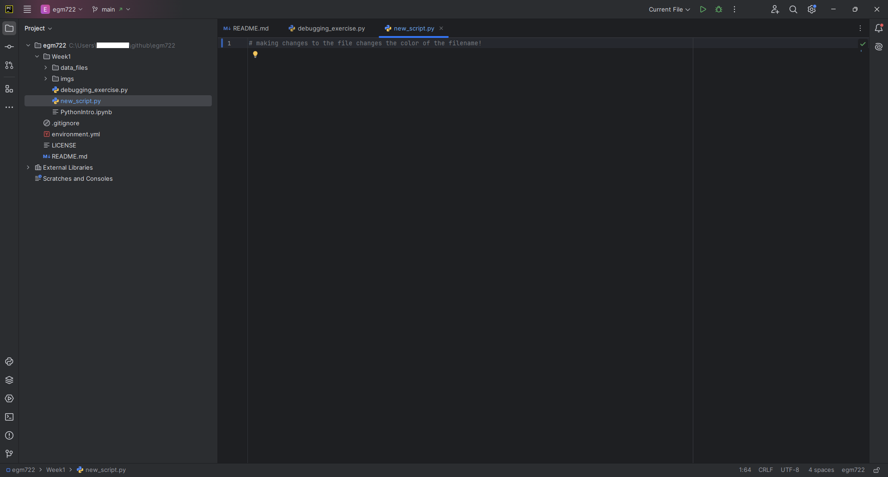
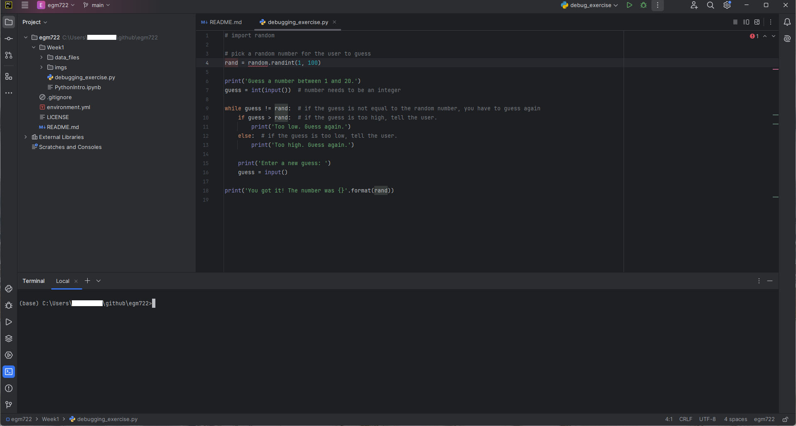
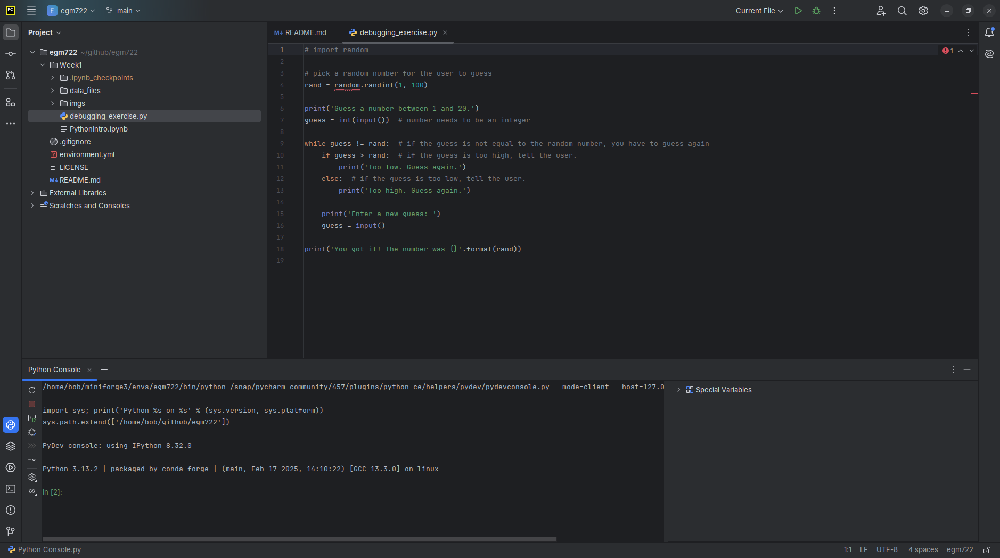

pycharm#
Note
The instructions here are for setting up PyCharm Community Edition. PyCharm is a powerful Integrated Development Environment (IDE) that provides integration with python, conda, and git. In the practicals, you’ll see how you can use it to write, edit, test, and debug your code.
You are not required to use PyCharm - there are many other good, free, options out there, including VS Code and Spyder. Many of the steps for the debugging exercise in Week 1 will be the same, broadly-speaking, for other IDEs. If you do use a different IDE, I will do my best to provide help, but just note that it may be some more work to get set up.
Warning
Many of the instructions and screenshots shown here are for PyCharm CE 2021.3.3, running on Ubuntu Linux 18.04.6.
As such, there may be some slight differences in appearance or menu options between what is shown here and the version you download.
downloading and installing#
To download PyCharm CE, point your browser to https://www.jetbrains.com/pycharm/download/ and select the version for your current operating system (Windows, MacOS, or linux).
Warning
Be sure to download the Community Edition, which is free. If you download the other version, you will need to purchase a license once the free trial expires after 30 days.
Once you have downloaded the installer, follow the instructions in the installation wizard. Once the installation has completed, open PyCharm CE.
creating a new project#
When you first open PyCharm, you should see a screen similar to the following:

Select Create New Project, which will open the following window:

For the location, choose the folder where you have cloned the egm722 repository by clicking on the folder icon
and selecting the folder from the tree (in this example, the folder is located in
/home/bob/Documents/teaching/ulster/egm722/2022/workbooks).
You should also set up a python interpreter for the project - this will enable you to use some of the autocomplete tools when writing code, run scripts within PyCharm, as well as making use of the debugging tools.
Because you have already set up a conda environment1, you can choose this interpreter. Next to
Previously configured interpreter, click on the ... button. In the Add Python Interpreter window
that opens up, select Conda Environment, and then Existing environment - you should see something
like the following:

You’ll need to provide the path to the python interpreter that is part of your egm722 conda environment - on
most computers, relative to where you’ve installed Anaconda, this will be2:
~/Anaconda3/envs/egm722/bin/python
(or, if you’re on Windows, python.exe). You will also need to supply the path to the conda executable
(program) that’s installed on your computer - again, on most computers, relative to where you’ve installed
Anaconda, this will be:
~/Anaconda3/bin/conda
(or, if you’re on Windows, conda.exe). You can also click the Make available to all projects checkbox,
which will help you more easily add this interpreter to other new projects. Click OK to return to the previous
window.
Once you’ve set the path to the project, and set up the python interpreter, click Create. The following window should pop up:
{kind=link}
Select Create from Existing Sources.
Note
This is the end of the “setup” steps - the rest of the sections of this page provide some more information about working in PyCharm, but they aren’t required to actually get started on the practicals.
the pycharm interface#
Once the new project has been created, you should see something like this:

The next few sections will provide some additional information about some of the features of PyCharm.
the file browser#
On the left side of the PyCharm window, you should see a file browser (note that you may need to click on the Project tab to expand the frame).
Here, you can see all of the files and folders included in the project. To open a script or other file, double-click on
it in the file browser. For example, here is debugging_exercise.py:

creating a new script#
You can also create a new file by right-clicking in the file browser and selecting New, followed by the file type. To create a new python script, it would be: right-click > New > Python File.
Type the name of the new script in the box that appears, and press Enter.
Warning
Remember to include the extension (.py) as part of the filename!
PyCharm interfaces with git to help you keep track of your projects, so it asks you if you want to add the file to git. Click Add to do this, and you should see the new file appear in the file browser, and in the main panel:

using git#
Note that the filename is colored in green, indicating that the file has been staged by git. Just like with GitHub Desktop, we can use PyCharm along with git to keep track of changes to our files.
Under the Project tab, you should see a Commit tab - click this to bring up the list of current changes:

In the list of current changes, we can see that one file has been affected: new_script.py.
Before we press Commit, we should first write a commit message, which we can do in the lower box of the panel:

Press Commit, and you should see the filename change from green to white.
Now, when you make changes to the file, the color will change again, this time to blue:
{kind=link}
This indicates that we have unstaged and uncommitted changes to the file3. We don’t need to commit every small
change that we make, but it’s a idea to do this regularly, and to push the changes to the remote repository
(so that they’re backed up). Don’t worry about all of this now - we will come back to these ideas over the course of
the module.
terminal interface#
Along the bottom of the PyCharm window, you should see a number of tabs, including one that says Terminal. Click this to open a Terminal (Command Prompt):
{kind=link}
You can use this in the same way that you would the “normal” Command Prompt. If you have configured an
interpreter for your project, it should open as an Anaconda Command Prompt with that environment activated,
meaning that you can use it to run scripts in that environment:

python console#
Next to the Terminal tab, you should also see a Python Console tab:
{kind=link}
This opens an iPython (interactive Python) terminal, which you can use in the same way that you
would use the cells of a jupyter notebook:
{kind=link}
more resources#
That ends the “tour” of PyCharm - there are many, many more features available, but this should provide enough to get you started. If you’re interested in learning more of the features, here are a few links to get you going:
Quick start guide [JetBrains]
Quick Tour [JetBrains]
Pycharm Tutorial #1 [Tech With Tim]
adding an interpreter#
If you didn’t add an interpreter to your project, don’t panic. If you want to add an interpreter to an existing project, or even change the interpreter for the project, there’s a way. In the lower right-hand side of the window, you should see something that says “Python 3.8” (or something similar). Click on this to open the interpreter menu:

Select Add Python Interpreter. In the window that opens up, select Conda Environment, followed by
Existing environment - you should see something like the following:
You’ll need to provide the path to the python interpreter that is part of your egm722 conda environment - on
most computers, relative to where you’ve installed Anaconda, this will be:
~/Anaconda3/envs/egm722/bin/python
(or, if you’re on Windows, python.exe). You will also need to supply the path to the conda executable
(program) that’s installed on your computer - again, on most computers, relative to where you’ve installed
Anaconda, this will be:
~/Anaconda3/bin/conda
(or, if you’re on Windows, conda.exe). You can also click the Make available to all projects checkbox, which
will help you more easily add this interpreter to other new projects. Click OK to return to the previous window.
changing the interpreter#
To change which python interpreter your project uses, open the Interpreter menu by clicking on it in the lower right-hand side of the window:
Select Interpreter Settings, which will open the Interpreter Settings window:

To change the interpreter, you can select a different one from the drop menu, or by clicking the gear icon and
selecting Show all. This will bring up the following window (note that your list will not be the same as this one):

Select the desired interpreter from this list. If you don’t see it there, you’ll need to add it using the steps
outlined above.
notes and references#
- 1
Assuming that you have followed the setup steps in order, that is.
- 2
The
~symbol is used to denote the “home” directory for a user. On Windows, this would beC:\Users\user. On MacOS, this is/Users/user, and on linux it is/home/user.- 3
Other colors include red, which indicates files that are not tracked by git, and yellow/amber, which indicates files that are ignored by git (i.e., included in the
.gitignorefile).